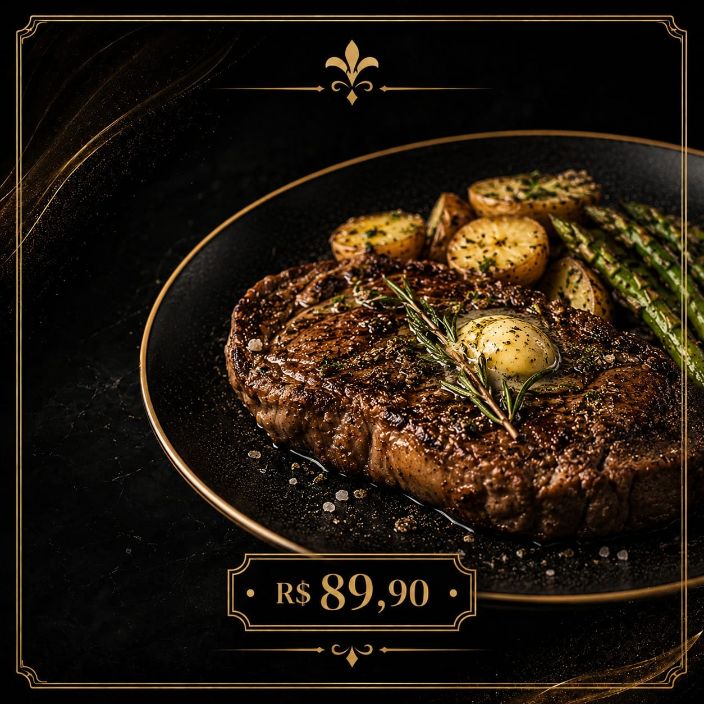
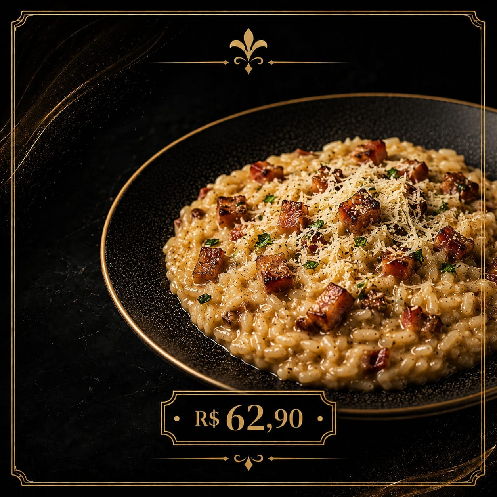
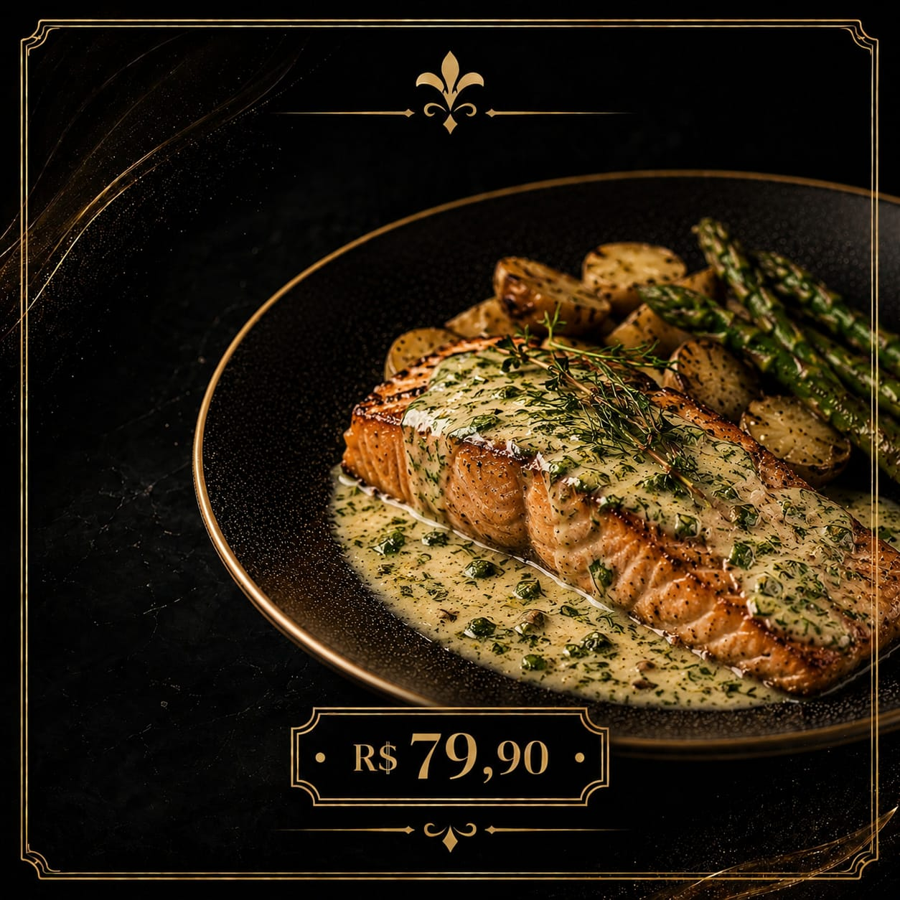

Fettuccine ao Funghi
Fettuccine fresco envolvido em um molho cremoso de cogumelos selecionados, resultando em uma textura aveludada e sabor marcante.
R$ 67
Filé Mignon com Manteiga de Ervas
Filé nobre com manteiga de alho e ervas frescas, acompanhado de batatas rústicas douradas e aspargos crocantes.
R$ 98
Risoto de Bacon
Risoto aveludado com o toque defumado do bacon dourado, equilibrado com ervas frescas e lascas de parmesão.
R$ 72
Salmão ao Molho de Ervas
Filé de salmão grelhado com azeite aromático, limão-siciliano e ervas finas. Acompanha arroz de brócolis e batatas coradas.
R$ 86